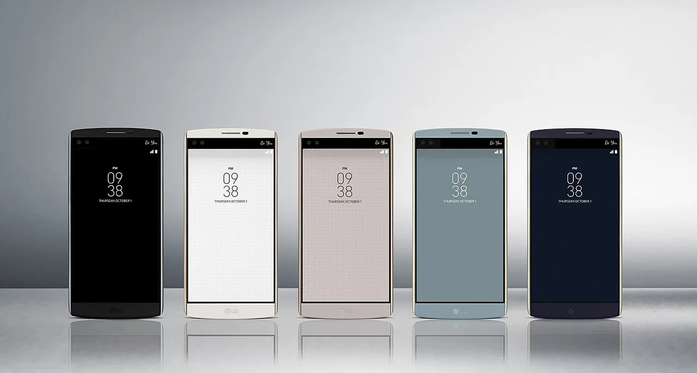

짧은 영상이 아니라 짧은 회차입니다

숏폼 드라마는 짧은 클립을 모아 놓은 것이 아닙니다. 한 회가 짧을 뿐, 구조는 드라마입니다. 첫 장면에서 갈등을 던지고, 몇 분 안에 감정의 보상을 주며, 다음 회 결제를 유도합니다. 그래서 일반 숏폼처럼 조회수만으로 성과를 판단하면 핵심을 놓칩니다. 중요한 것은 몇 명이 끝까지 보고, 몇 명이 다음 회로 넘어가며, 어디서 결제하는지입니다.
모바일 화면에 맞춘 연출도 다릅니다. 큰 배경보다 얼굴과 손짓, 빠른 대사, 즉각적인 갈등이 중요합니다. 시청자는 출퇴근길이나 잠깐의 쉬는 시간에 봅니다. 복잡한 세계관보다 이해가 빠른 관계와 감정선이 유리합니다. 이 장르에서 좋은 대본은 문학적인 문장보다 다음 회를 누르게 하는 장면 배치에 가깝습니다.
수익은 광고보다 결제 동선에서 나옵니다
숏폼 드라마 플랫폼의 강점은 결제 동선입니다. 무료 회차로 몰입을 만들고, 갈등이 커지는 순간 유료 회차로 넘어가게 합니다. 이 모델은 광고 조회수와 다르게 작동합니다. 광고형 콘텐츠는 오래 머무르는 사람이 중요하지만, 회차 결제형 콘텐츠는 특정 순간에 지갑을 여는 사람이 중요합니다.
그래서 제작사는 시청 지속률과 결제 전환율을 함께 봐야 합니다. 조회수가 높아도 결제가 약하면 플랫폼 입장에서는 약한 콘텐츠입니다. 반대로 조회수는 작아도 특정 장르 팬이 꾸준히 결제하면 장기 수익이 됩니다. 로맨스, 복수, 가족 갈등, 재벌 서사는 빠른 감정 보상과 결제 전환에 맞기 때문에 자주 쓰입니다.
한국 제작사는 속도와 품질 사이에 섭니다
한국 제작사가 숏폼 드라마 시장을 보는 이유는 분명합니다. 긴 드라마 제작비가 높아지고, 글로벌 플랫폼 경쟁이 치열해지면서 더 작고 빠른 실험장이 필요해졌습니다. 숏폼 드라마는 상대적으로 짧은 제작 기간과 낮은 편당 비용으로 장르 반응을 확인할 수 있습니다. 성공하면 장편 드라마, 웹툰, 웹소설, 굿즈로 확장할 여지도 있습니다.
하지만 한국 콘텐츠의 강점이 그대로 숏폼에 옮겨지는 것은 아닙니다. 정교한 감정선과 높은 영상미는 장점이지만, 너무 느리게 쌓으면 모바일 시청자는 이탈합니다. 반대로 자극만 세우면 브랜드 신뢰가 약해집니다. 한국 제작사에 필요한 것은 긴 드라마의 품질 감각을 짧은 회차의 속도에 맞게 다시 편집하는 능력입니다.
진짜 가치는 다음 창구에서 보입니다
숏폼 드라마의 장기 가치는 플랫폼 안 결제로 끝나지 않습니다. 인기 작품은 장편화, 리메이크, 웹툰화, 해외 판권, 배우 팬덤으로 이어질 수 있습니다. 그래서 제작사는 처음부터 권리 구조를 정교하게 설계해야 합니다. 플랫폼 독점인지, 제작사가 원천 IP를 보유하는지, 해외 리메이크 권리는 어디에 있는지에 따라 수익의 모양이 달라집니다.
문화 산업에서 새 포맷은 늘 과열과 정리를 함께 겪습니다. 숏폼 드라마도 마찬가지입니다. 초반에는 많은 제작사가 뛰어들고 비슷한 이야기가 늘어날 수 있습니다. 시간이 지나면 결제 전환이 좋은 장르, 해외에서 통하는 배우 조합, 2차 판권이 가능한 IP가 남습니다. 조회수 경쟁 뒤에 권리 경쟁이 오는 구조입니다.
짧은 회차는 긴 계산서를 남깁니다
숏폼 드라마는 짧아서 가볍게 보이지만 사업 구조는 단순하지 않습니다. 한 회차가 1분 안팎이면 제작비가 적게 들 것 같지만, 빠른 전개와 강한 후킹을 위해 기획과 편집이 촘촘해야 합니다. 초반 몇 회에서 시청자를 붙잡지 못하면 뒤 회차 결제까지 이어지지 않기 때문에 첫 장면의 밀도가 매우 중요합니다.
수익은 조회수보다 결제 루프에서 갈립니다. 무료 회차로 관심을 끌고, 갈등이 커지는 지점에서 유료 회차를 열고, 다음 작품으로 다시 이동시키는 구조가 만들어져야 합니다. 광고형 플랫폼과 결제형 플랫폼은 필요한 연출도 다릅니다. 광고형은 넓은 도달이 중요하고, 결제형은 다음 회차를 누르게 만드는 감정 설계가 중요합니다.
IP 확장도 핵심입니다. 웹소설, 웹툰, 숏폼 드라마, 장편 드라마가 서로 이어지면 하나의 이야기를 여러 번 팔 수 있습니다. 다만 원작 팬이 기대하는 장면을 지나치게 줄이면 반발이 생기고, 새 이용자에게 설명이 부족하면 진입 장벽이 생깁니다. 짧게 만드는 능력과 원작을 보존하는 감각이 함께 필요합니다.
한국 제작사에는 기회와 위험이 같이 있습니다. 빠른 제작 능력과 배우 풀, 웹툰 원작은 강점입니다. 그러나 플랫폼이 해외에 있으면 수익 배분과 데이터 접근권이 제한될 수 있습니다. 어떤 회차에서 이탈이 생기는지, 어떤 국가에서 결제가 일어나는지 알 수 있어야 다음 작품을 제대로 설계할 수 있습니다.
앞으로 숏폼 드라마 경쟁은 인기 클립 몇 개로 끝나지 않습니다. 반복 결제율, 완주율, 원작 전환율, 해외 자막 품질, 2차 판권 계약이 함께 맞아야 합니다. 짧은 영상이지만 사업 판단은 길게 해야 합니다. 조회수가 크더라도 결제와 IP 확장으로 이어지지 않으면 남는 것은 노출 기록뿐입니다.
관련 영상
1분 30초에 5억 원? 중국 숏폼 드라마 열풍에 한국 제작사도 들썩
숏폼 드라마를 읽는 핵심은 “짧다”가 아닙니다. 짧은 시간 안에 감정과 결제를 설계하고, 그 결과를 더 큰 IP로 확장할 수 있는지가 시장의 진짜 질문입니다.
숏폼 드라마를 콘텐츠 산업의 작은 유행으로만 보면 중요한 변화를 놓칩니다. 이 형식은 시청자의 시간을 잘게 나누고, 제작사는 그 작은 시간 안에서 결제와 다음 작품 이동을 설계합니다. 성공한 작품은 짧은 회차로 끝나지 않고 원작 판매, 배우 인지도, 해외 리메이크, 장편화 가능성으로 이어집니다. 실패한 작품은 조회수는 높아도 이용자가 결제하지 않고 사라집니다. 그래서 제작사는 한 장면의 자극보다 전체 회차의 감정 곡선과 권리 구조를 더 정교하게 봐야 합니다.
시청자는 짧은 시간을 내지만 감정은 길게 기억합니다. 좋은 숏폼 드라마는 매회 강한 반전만 던지는 것이 아니라 인물이 왜 그런 선택을 하는지 빠르게 납득시킵니다. 이 설득이 없으면 자극은 금방 피로해집니다. 제작사는 데이터로 이탈 구간을 보되, 숫자만 따라가면 이야기의 호흡을 잃을 수 있습니다. 결국 오래가는 IP는 빠른 편집과 인물의 감정선을 동시에 잡은 작품에서 나옵니다.
숏폼 드라마는 짧지만 가벼운 사업이 아닙니다. 몇 분 안에 결제와 팬덤, 원작 확장 가능성을 모두 설계해야 하므로 오히려 긴 호흡의 제작 판단이 필요합니다.